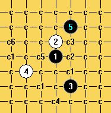

[互动棋谱]山月终结
首页
茗弈阁
#1 [互动棋谱]山月终结 作者：二十七刀 发表时间：2009-3-10 21:41:59
晚上有人问了山月这个变化,干脆就放到这里大家共享 山月.rar
山月.rar［ 无尽 于 2009-3-10 21:53:17 时奖励此帖[金币加 20 威望加1］
［本站用户 五子痴 于 2009-3-11 20:30:47 花5个金币送您鲜花一朵］
［此帖子已被 茗弈小刀 在 2009-4-22 19:41:22 编辑过］
#2 Re:山月终结 作者：刀魂 发表时间：2009-3-10 22:08:14
呵呵，不知道 山月 2 3 打怎么终结。。。
#3 Re:山月终结 作者：明五 发表时间：2009-3-14 11:58:40
我是门外汉,特来学习。